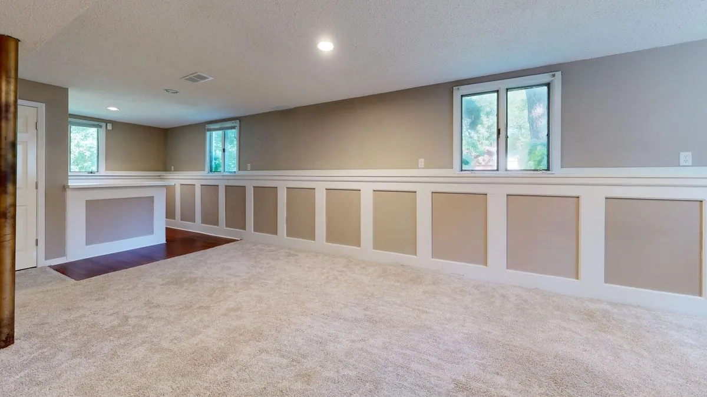

Like-for-like replacement
Swapping an existing window for a new one, sized to the current opening, and sealed against water and air.
 Reno Rise
Reno Rise
Basement & Legal Suite Planning
Home Services Basement Renovations Legal Secondary Suites Basement Finishing Underpinning Waterproofing Egress Windows Separate Entrances Soundproofing Basement Flooring Guides Service Areas About Contact Get MatchedReplacing a small basement window is one job. Cutting a larger egress opening for a bedroom or suite is another. Know which one you need, then connect with qualified Toronto professionals.
Reno Rise is an independent enquiry and matching service, not a contractor.

Reno Rise helps Toronto homeowners plan basement renovations and legal secondary suites and connect with independent local renovation professionals.
Share your goals, your basement and your timeline using the enquiry form.
We look at what you have shared to understand the scope and what still needs to be confirmed.
Reno Rise matches your project with the contractor best suited to the work, and they take it from there.
Daylight and a safe exit turn a cellar into a home. The two jobs are related, but not the same.
Swapping an existing window for a new one, sized to the current opening, and sealed against water and air.
An egress window usually means cutting the foundation wall, with structural care around lintels and pipes.
A well outside the window with drainage, so it does not collect water against your foundation.
Ontario’s guide explains that escape windows can be required where exits pass through other units.
Toronto Building lists new windows and relocated openings among work that needs a permit.
Insulation, air sealing and interior finishing around the opening.
People search for egress window installation price and basement egress window cost because the range is wide. Reno Rise does not publish prices, but here is what moves the total:
Whether you are after basement window replacement near you or a full egress upgrade, ask the same basics before hiring.
Toronto Building includes new windows and structural or material changes among work that needs a permit. Toronto Building lists underpinning, structural or material changes, new windows or doors, constructing a basement entrance, heating or plumbing changes and adding a second dwelling unit among the work that needs a building permit. Confirm what applies to your project.
If you only want a brighter room and not a bedroom or exit, a smaller window replacement may be enough: see basement window replacement and window well installation.
Reno Rise is focused on Toronto homes. Enquiries from elsewhere in the Greater Toronto Area are welcome too.
“Amazing work and an outstanding crew. Very professional, energetic, and a pleasure to work with from start to finish. They communicate openly throughout the entire project, show up reliably, and get the job done right.”
“Saved my a$!. Butt lot outstanding service, affordable, and not to mention very quick to get ‘er done!!! They offer all sorts of services, mine was plumbing and they truly saved the day. My heroes. 10/10 would recommend.”
Stock photos from Pexels, shown for reference only. They are not Reno Rise projects, and Reno Rise does not install windows.


An egress window is large enough, and reachable enough, to be used as an emergency exit. In a basement it usually means an enlarged opening and a window well.
Bedrooms need a safe way out, and Ontario’s guide describes emergency escape windows for certain layouts. What applies depends on your design, so confirm with a designer and Toronto Building.
Toronto Building lists new windows and relocated openings among work that needs a permit. A like-for-like swap is different from cutting a new opening, so describe your exact work to the City.
It depends on the size of the opening, the wall, the window well, permits and finishing. Reno Rise does not publish prices. Get itemized quotes from more than one professional.
A window well is built with drainage so it does not collect water against the foundation. Ask each professional how theirs will drain in heavy rain.
Last reviewed September 2026. General planning information; confirm requirements for your property with Toronto Building and qualified professionals.
Tell us about your basement and your goals. Reno Rise reviews the details and matches your project with the contractor best suited to the work.
Tell us about your basement. Reno Rise reviews your project details and connects you with an appropriate independent professional.